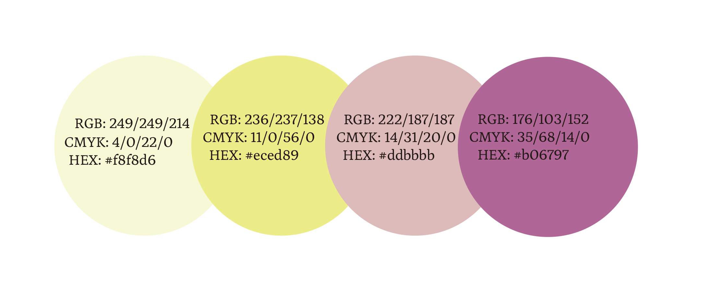
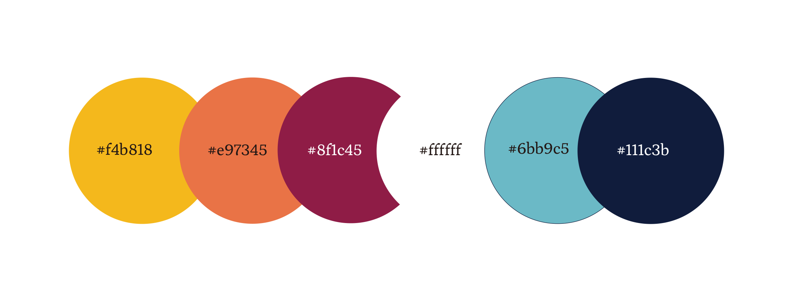
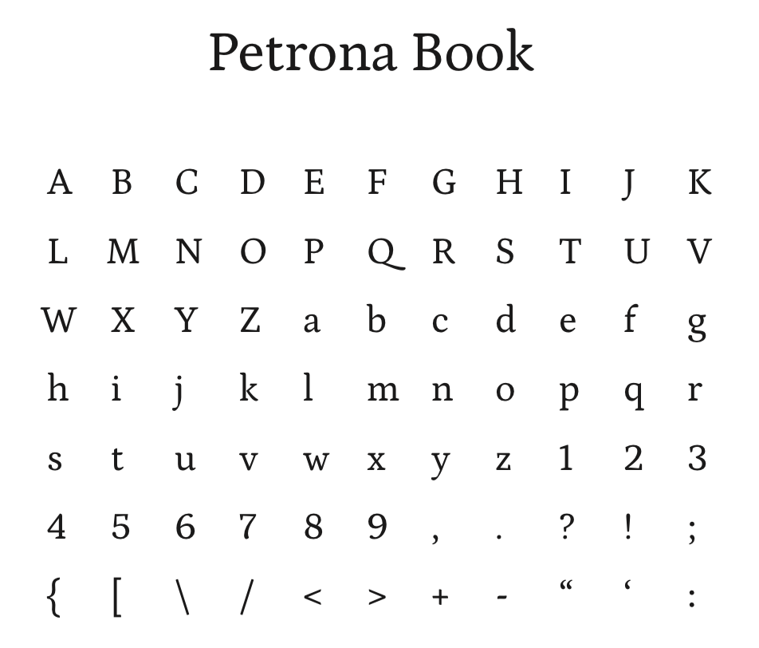
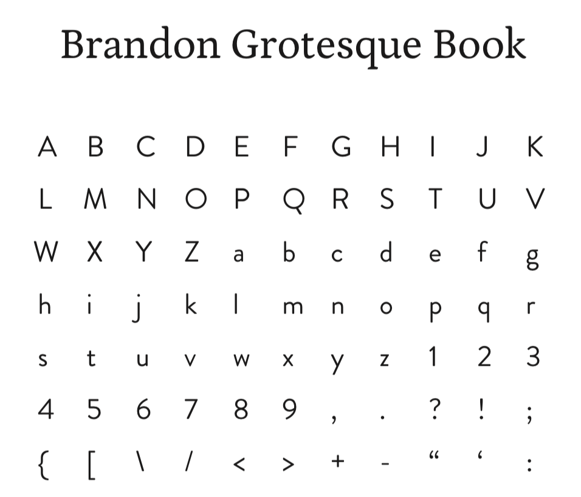

 
Tryon Beauty utilizes two typfaces. The firs is Beandon Grotesque, which is a geometric-style sans serif font, that used for headings in website design. While the second font, Petrona, is an elegant serrif font that is used in body paragraph that are inferior in heirarchy. These set of typfaces enhence the brand tone of casual, fun and elegant, they should be combined carefully to maintain this concept.
 